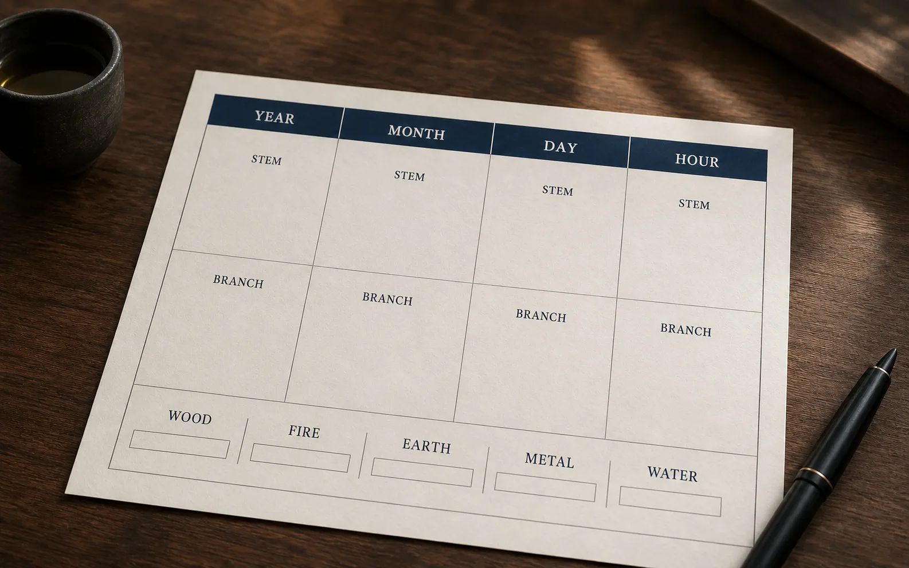

Heaven Earth Humanity
Heaven, Earth, and Humanity
form the Three Powers.
Each shapes one-third of your life.
Heaven is the pattern you are born with—your BaZi chart, Luck Pillars, and annual cycles. Earth is the environment in which you live. Humanity is how you see, think, choose, and act.
Begin with Heaven
Free BaZi Calculator
Use your birth details to generate your Four Pillars and timing sequence.
Your Chart
Four Pillars Preview
The original BaZi symbols are shown with English labels and element colors.
Year Pillar—
Month Pillar—
Day Pillar—
Hour Pillar—
10-Year Luck Pillars
Sequence calculated from the birth chart
The free chart shows eight timing chapters. The starting age is approximate.
Founder
About Tengyunzi
Ancient structure. Modern interpretation. Human responsibility.
Tengyunzi blends classical Chinese metaphysics with rigorous analysis and practical guidance for modern life.